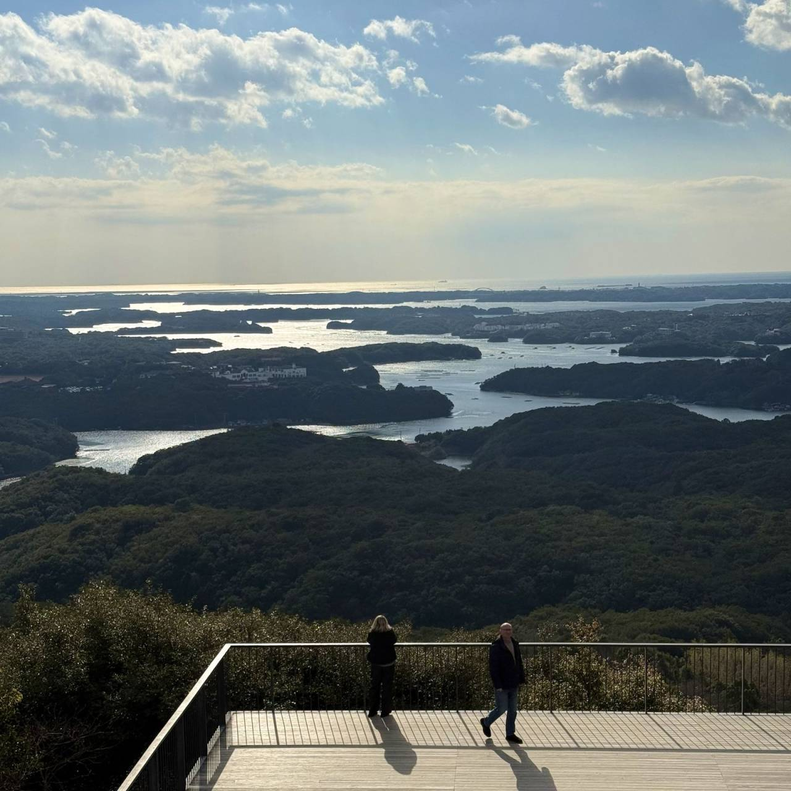
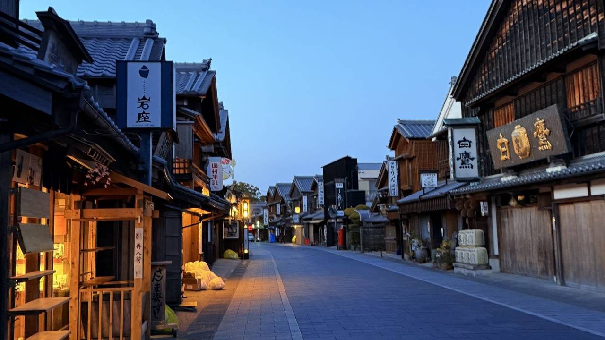
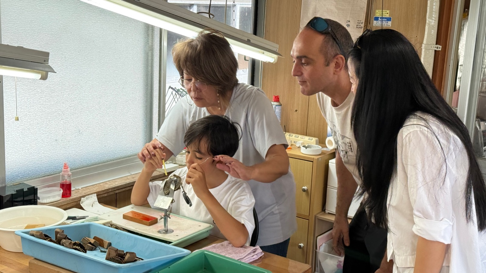
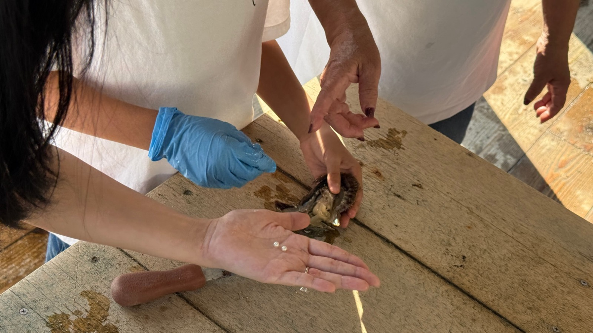
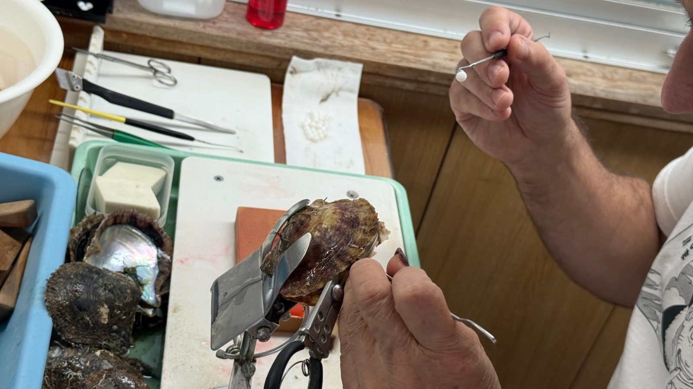
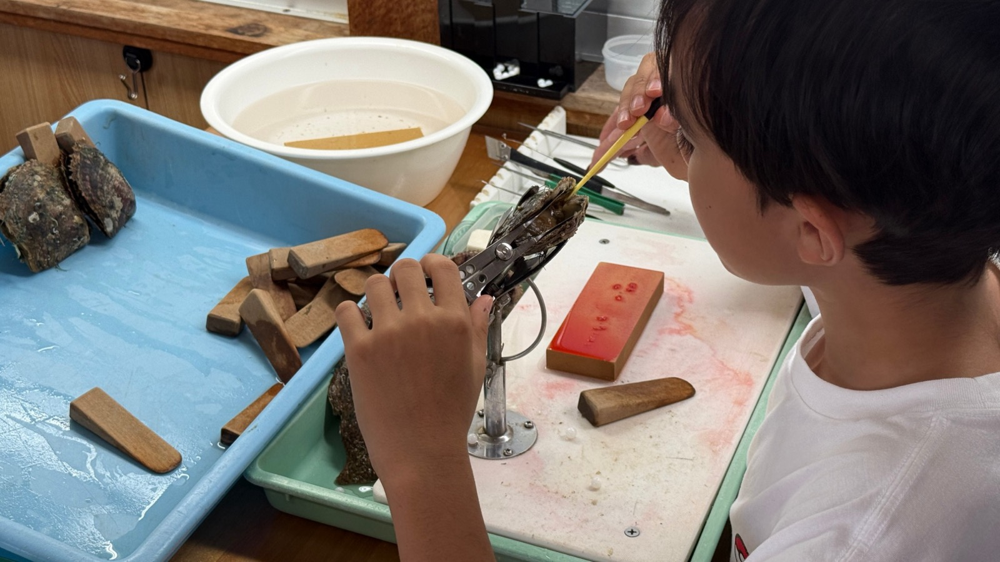
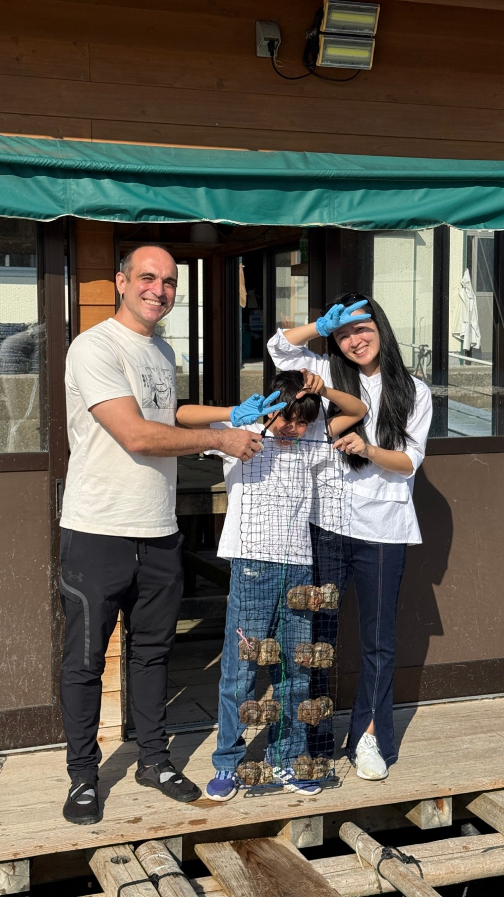
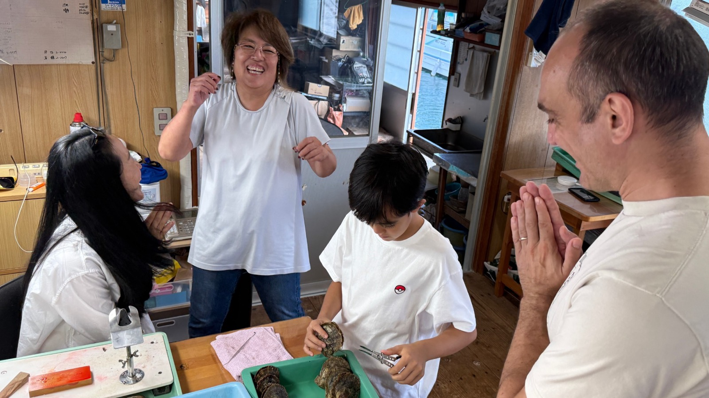
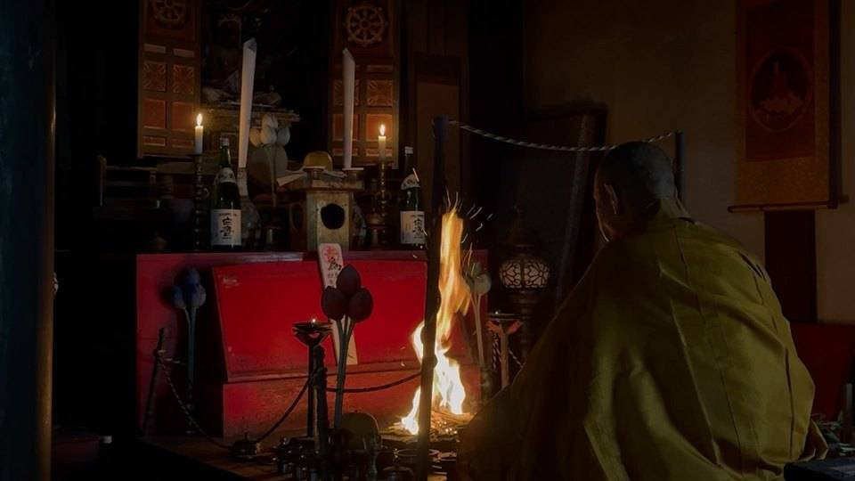

Our Ise-Shima Tours
All of our Ise-Shima tours are private, small-group and guided in English. Looking for the best things to do in Ise-Shima? Explore Japan's most sacred shrine and the hidden gems of the ria coastline — quiet fishing villages, ama divers and local food culture — on a fully private tour with an English-speaking local guide. You can also take part in the work of the region itself: a goma fire ritual at a temple founded in 742, or harvesting a real akoya pearl at a working pearl farm in Ago Bay, where the cultured pearl began.

Basic Tour
This is a fully private walking tour designed exclusively for you and your family.
You will explore each location on foot, with transportation between points provided by car.
The tour is planned to begin around 9:00 a.m and conclude around 5:30 p.m, without dinner included.
About this tour
This tour follows a thoughtfully curated route, refined and tested by a local guide.
While the experience can be flexibly adjusted to suit your preferences, it is primarily conducted along a carefully designed itinerary to ensure a smooth and well-balanced journey.
The tour includes a harmonious blend of iconic highlights, such as Ise Grand Shrine, as well as hidden gems known mostly to locals.
It is designed to help you explore the Ise-Shima area in an efficient yet immersive way, going beyond the typical tourist experience.
Above all, I hope you will feel the unique atmosphere of this region.
In Ise-Shima, we call this "Shima Time" — a gentle, unhurried rhythm of life.
What's Not Included
Meal costs, optional personal experience fees, and shopping expenses are not included.
Transportation between locations is provided by car at no additional charge.
Access & Pick-up
Hotel pick-up and drop-off are available for guests staying in the Ise, Toba, and Shima areas.
For all other guests, pickup is available at Ugata Station or Iseshi Station.
Both stations can be reached from Osaka in about 2 to 2.5 hours by limited express train, with no transfers required.
Optional Dinner
Dinner can be added for an additional 6,000 JPY per person.
If you have any questions or special requests, please feel free to contact me. I would be very happy to help you plan a memorable day in Mie.
Photos are for illustration purposes / 写真はイメージです
¥30,000~36,000 / per person* For groups of 4–5 people: ¥35,000~41,000 / person

Ise Jingu Tour
A private guided tour of Ise Jingu's Inner Shrine (Naiku) — Japan's most sacred Shinto site.
Learn proper worship etiquette, experience purification rituals, and discover stories you won't find in any guidebook.
Departs at 9:00 or 14:00. Guided portion at Naiku is approximately 2 hours.
About this tour
Ise Jingu is Japan's holiest Shinto shrine — yet most visitors spend only an hour and leave without understanding what they have seen.
This tour focuses on the Inner Shrine (Naiku), home to Amaterasu, the sun goddess at the heart of the Shinto faith. With a knowledgeable local guide, you will move through the ancient forested approach at the right pace, gaining a deeper understanding of the worship rituals and spiritual significance that define this sacred place.
If you wish, you can also add an optional visit to the Outer Shrine (Geku) with car transportation (¥5,000 per person). When selected, the tour follows the traditional order: Geku → Naiku, adding approximately 1.5 hours to the experience.
After the guided tour, Okage Yokocho and Oharai-machi — the historic merchant streets just a short walk from Naiku — are yours to explore independently at your own pace.
What's Included
Guided tour of Ise Jingu Inner Shrine (approx. 2 hours).
Optional: visit to the Outer Shrine (Geku) with car transportation (+approx. 1.5 hours · ¥5,000 / per person).
Pickup from Ise Station or accommodations in the Ise, Shima, and Toba areas.
What's Not Included
Meal costs, personal shopping expenses, and optional activity fees are not included.
Access & Pick-up
Hotel pick-up is available for guests staying in the Ise, Toba, and Shima areas.
Pickup at Iseshi Station is also available.
The tour concludes at the Inner Shrine (Naiku). Drop-off at your hotel is available upon request — please let us know in advance.
Important Notes
Maximum 5 guests. Comfortable walking shoes are required.
This tour is not suitable for guests with mobility impairments.
Photos are for illustration purposes / 写真はイメージです
¥15,000 / per person
Pearl Experience in Ise-Shima
Harvest a real akoya pearl at a working pearl farm on Ago Bay — where cultured pearls began
Ise-Shima is where the cultured pearl began. A narrow mountain road — just wide enough for a small Japanese car — leads down to a working pearl farm on Ago Bay, where akoya pearls are grown and made into jewellery on the same site.
This is not a visitor attraction. It is a working farm, and you take part in what happens there.
Two experiences are available. Choose the one you prefer below. Maximum 5 guests.
About this experience
The world's first cultured pearl was grown here in Ise-Shima, and Ago Bay has been the centre of akoya pearl farming ever since. More than a century later, small family farms still work their own rafts across the bay.
One of them takes guests. You drive in along a steep, narrow mountain road, arrive at the workshop, and from there you are not watching pearl farming — you are doing it, alongside the people who do it every day.
Sightseeing shows you the surface of a place. This takes you into the work that the region is actually built on.
Choose your experience
1 · Pearl Harvesting
Choose an oyster from the farm's own stock and open it with your own hands.
At the workshop you are shown the farm's cultured oysters and choose one yourself. Then you open the shell and lift out the pearl with your own hands.
Every pearl is different in shape, colour and size, and nobody — not even the farmer — knows what is inside until the shell is open.
Afterwards there is time to feed the fish kept beside the rafts, and back at the shop you can have your pearl set into jewellery if you would like to.

The pearls, moments after the shell was opened.
Itinerary
Drive up to the farm along the mountain road
Choose your oyster at the workshop
Open the shell and take out your pearl
Feed the fish
Back at the shop — optional jewellery setting
Finish
Important Notes
These are real pearls. Some come out perfectly round; others are baroque, with their own irregular shape. Which one you find cannot be chosen in advance — that is the nature of it, and part of why it is worth doing.
Having your pearl set into jewellery depends on the workshop's schedule on the day. We check this for you with every booking.
Price on enquiry2 · Nucleus Insertion & Harvesting
Learn the craft itself — place the nucleus into six oysters, then return them to the sea.
Nucleation is the technique at the heart of akoya pearl farming, and it has been handed down in Ago Bay for generations. Here a craftsman who does it for a living shows you how — and then you do it yourself.
Each guest works on six oysters, placing a nucleus and a small piece of mantle tissue inside each one. It is close, delicate work that asks for a steady hand and real concentration.
The oysters you have worked on go into nets and back into the sea. About a year later, any pearls that can be harvested from your own shells are collected and sent to your home address.
You also choose an oyster from the farm's stock and harvest a pearl on the day — so you leave with a pearl in your hand, and another one growing in the bay.
Learning the craft from a craftsman, returning your own shells to the sea, and finding out a year later what grew inside them. This is as close to Ise-Shima pearl farming as a visitor can get.

The nucleus — the small bead that becomes the centre of the pearl.

Close, careful work — guided by the craftsman at every step.

Your own shells, in the net, on their way back into the bay.
Itinerary
Drive up to the farm along the mountain road
Explanation and preparation at the workshop
Demonstration by a professional
You insert the nucleus and the mantle tissue
Your oysters go into nets and back into the sea
Choose an oyster to harvest
Open the shell and take out your pearl
Feed the fish
Back at the shop — optional jewellery setting
Finish
Important Notes
The pearl you harvest on the day is yours to take home.
Not every oyster survives the year. Where pearls can be harvested from your shells, all of them are sent to you — but in some cases none of the shells survive and no pearl can be collected. The odds vary considerably with the season.
This is technical work and may be difficult for younger children.
Having your pearl set into jewellery depends on the workshop's schedule on the day. We check this for you with every booking.
Price on enquiryWhat's Included
The experience fee at the pearl farm, private car transport to and from the farm, and an English-speaking local guide throughout.
What's Not Included
Meals, personal shopping, and the cost of having a pearl set into jewellery are not included.
Access & Pick-up
Hotel pick-up and drop-off are available for guests staying in the Ise, Toba, and Shima areas.
For all other guests, pickup is available at Ugata Station.
This station can be reached from Osaka in about 2.5 hours by limited express train, with no transfers required.
Booking
This is a small working farm, so every booking is confirmed with them before it is final. Send us your preferred date, the number of guests and which of the two experiences you would like, and we will come back to you with availability and the price — usually the same day.
Send an enquiry about the Pearl Experience →
Cancellations are handled under our standard cancellation policy — please see the full terms below.

A small farm, a long morning, and people who are glad you came.

Goma Fire Ritual in Ise-Shima
A Shingon fire ceremony to burn away misfortune, at a temple founded in 742
Take part in goma — the sacred fire ritual of esoteric Shingon Buddhism — inside a temple founded in 742, in Ise-Shima National Park.
Monks chant sutras while gomagi prayer sticks burn: a yakuyoke ceremony to ward off bad luck and purify your wishes.
A morning of roughly 2.5 hours. Departs at 9:00. The tour typically ends around 11:30–12:00, though this may vary depending on travel time. For guests aged 15 and over.
Held indoors in the temple hall, the ritual goes ahead rain or shine — a good choice for a rainy day in Shima.
About this experience
This experience was created for travellers who want two things at once: the nature of Ise-Shima National Park, and Japanese culture as it is actually practised — not performed for visitors.
The temple was founded in 742, when Emperor Shomu prayed here for the safe construction of Todai-ji in Nara. According to temple tradition, Kukai — the founder of Shingon, Japan's esoteric Buddhist school — established its teachings here in 807, and the temple has kept them ever since.
At the heart of your visit is the goma ritual. Wooden prayer sticks are burned in a sacred hearth, and the rising flames carry prayers to Fudo Myoo, the fierce guardian of Shingon Buddhism. The fire is believed to burn away worldly desires and misfortune, purifying each wish before it reaches him.
You sit close to the fire, in the clear air of Ise-Shima, as the sutras are chanted. It is a quiet, direct encounter with Japan's spiritual culture — and something very few visitors ever see.
Itinerary
Pickup
Goma ritual experience & temple walk
Drop-off
What's Included
The ritual participation fee is included in the price — there are no additional charges on the day, and we add no booking fee.
Private car transport, pickup and drop-off, and an English-speaking local guide throughout.
What's Not Included
Personal shopping and any expenses of a personal nature are not included.
Access & Pick-up
Hotel pick-up and drop-off are available for guests staying in the Ise, Toba, and Shima areas.
For all other guests, pickup is available at Ugata Station.
This station can be reached from Osaka in about 2.5 hours by limited express train, with no transfers required.
A Note on Respect
This is a working temple, and the experience depends on the goodwill of the community. We ask that you keep your voice low, take your rubbish with you, and treat the place as the sacred site it is.
Please also refrain from sharing the location afterwards. Photographs are welcome — we simply ask that you post them without the temple's name or location data.
Important Notes
Please book at least 48 hours in advance. The temple may occasionally need to cancel; in that case you receive a full refund.
Maximum 5 guests. Minimum age 15.
The goma ritual takes place indoors and runs as planned in the rain. On rainy days, the temple walk covers only what can be done comfortably with an umbrella.
Cancellations within 48 hours of the start time are charged at 50% of the tour fee, and within 24 hours at the full fee. Cancelling more than 48 hours ahead is free of charge — see our full cancellation policy below.
¥40,000 / per person| Cancelled more than 48 hours before the start time | No charge |
|---|---|
| Cancelled within 48 hours of the start time | 50% |
| Cancelled within 24 hours of the start time Also applies if you do not appear on the day without contacting us. | 100% |
| Cancelled by us, or by a venue on the itinerary Including days when weather makes the tour unsafe to run. | Full refund |
Percentages apply to the total tour fee. If your plans change, please contact us as early as you can — where the schedule allows, we will offer to move your booking to another date rather than charge a cancellation fee.
The mobile guide is a digital product and is non-refundable once purchased. Full terms are set out in our legal notice.